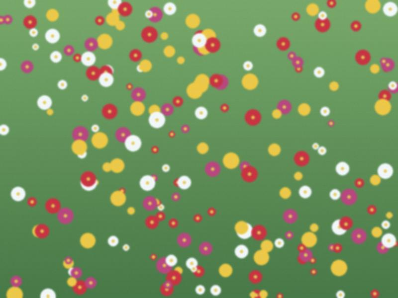
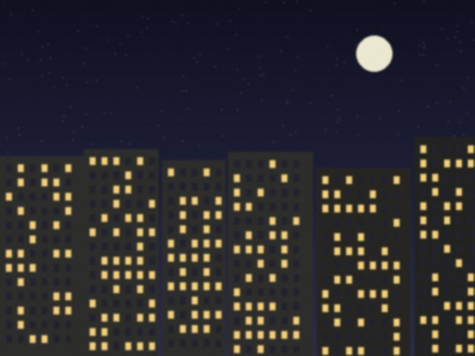
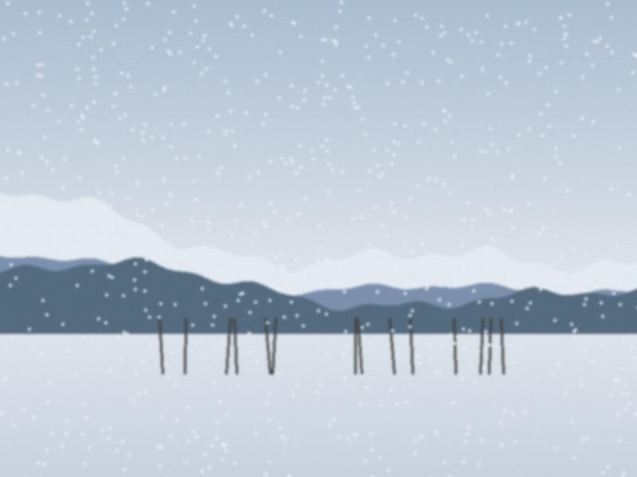
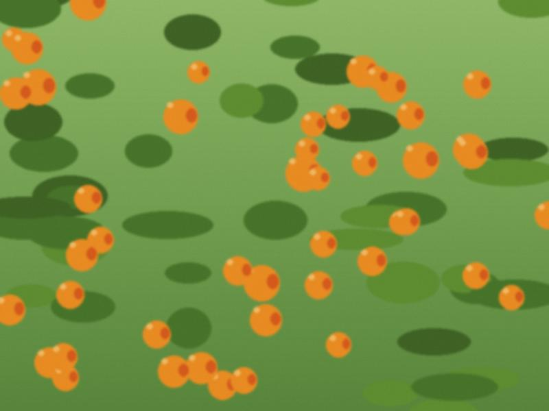
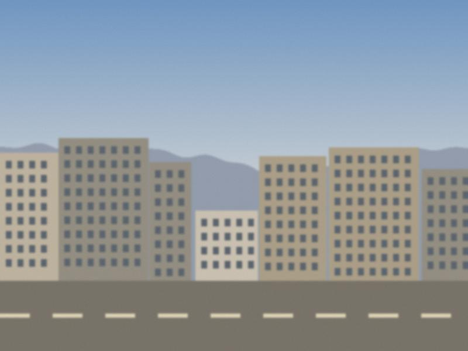
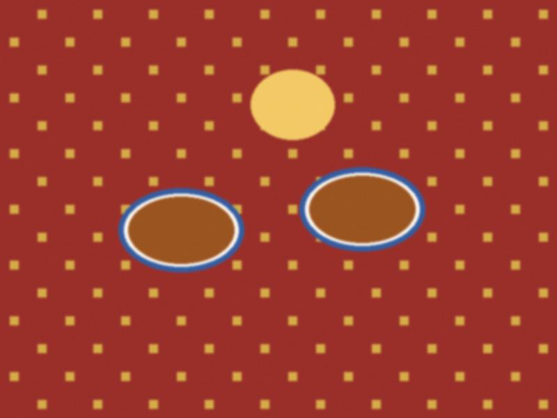
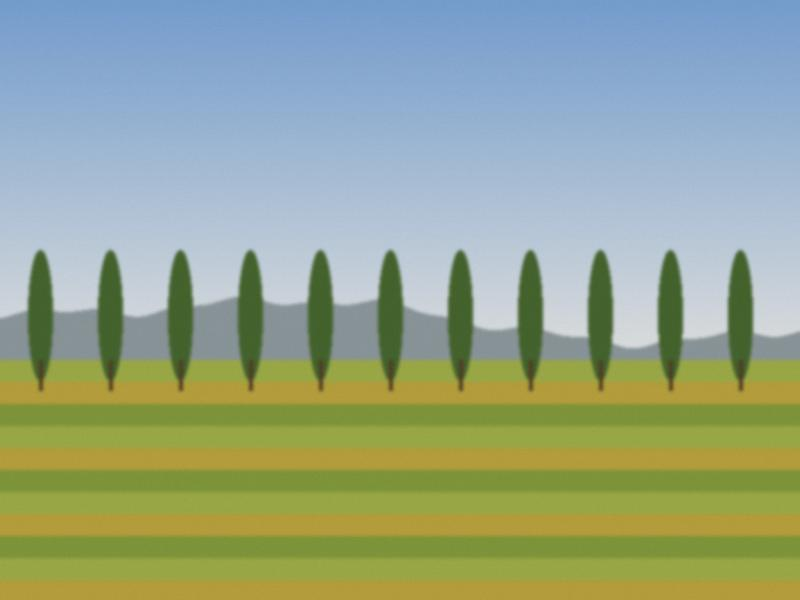

Archive for the ‘budding’ Category
The line to the outside
Since the end of June my blog is open again from outside the country. For almost three years nobody abroad could read it. I do not know who else was reading. Dima, from Siberia, wrote that he read a whole year of notes in one night.
A railway is also a line to the outside. The north line to the border has never been closed for more than a few hours, in my time. I think about that: the trains kept passing when the pages did not. See Lines of the north.
Lugovoy

The tulip rows on the Lugovoy embankment, last May.Lugovoy is a small station on the Chu line with a stationmaster, a kiosk, a bench, two switches and a well. In spring the stationmaster plants tulips on the embankment, a hundred and some, in rows, and the drivers of the passing trains slow down in May to see them. This is not in any instruction, but all of them do.
I would like to see how long it has been like this. See Stations of the Chu line.
Lines of the north
The north line runs from Nurzhan across the eastern Chu plain to the frontier. It is the old Turksib: the line to Almaty and Siberia. At the border station the Iradi crew uncouples and a Kazakh crew couples, with a short ceremony of paper: the wagon list, the seals, the stamps. Around the clock.
That station is the loudest place in the country at three o'clock in the morning. See Lines of Irad: a map in words.
Cold start
At minus 25 a diesel is never switched off. In the depot a locomotive will idle all night, to keep the oil and the coolant from freezing, and the fuel bill for those nights is higher than a month of summer. The depot foreman says it is like keeping a horse in the stable: you pay for it even when it does nothing.
We say "to put a cold one on the line" for a hopeless job. See Diesel, no wires and Winter running.
Freight at the Nurzhan depot

The Nurzhan depot yard under the orange lamps.Four private sidings leave the Nurzhan depot yard: No. 3 to the refinery, No. 7 to the NAI silos, No. 11 to Nurzhanmash, No. 14 to the Trans-Chuy bonded terminal. The tank wagons for the refinery arrive empty and leave full. The silos take the wheat trains in autumn. At Nurzhanmash the wagons come in with steel and go out with pumps.
At night the yard is orange from the lamps, and the shunting is slow, like a very long breath. See Shunters from China.
Workers' trains 6201 and 6202
Every working day, six days a week, two trains run that are not on the passenger board: 6201 and 6202, the depot workers' trains between Nurzhan station and the freight depot, four kilometres to the north-east on the north line. They carry the men from the freight yard, in old green carriages, unlit, with a stove at one end.
They are the only trains in Irad where nobody asks for a ticket and everybody has a tin of tea. See Freight at the Nurzhan depot.
Fewer than twenty
The railway has about thirty main-line locomotives on its books. Fewer than twenty can run on any given day. The rest are waiting for a part, or for a heavy repair in Kazakhstan, or for a driver, or for the fuel. In the depot they call the waiting ones "the pensioners."
The numbers are public, from the annual report. What is not in the report is how a good mechanic will go round the yard at night and take one dead locomotive's alternator to another one's engine, and bring the other back after a week. See The 2TE10.
Winter running

The snow plough ahead of No. 1 at a cutting.In December we plan for the snow even when there is none. When the wind comes off the Kyrgyz Range the snow drifts across the line at the cuttings, and a snow plough is sent out ahead of No. 1. The suburban trains are cancelled in heavy snow, the freight crawls, and the dispatcher's tea gets cold.
I carry a small notebook in my breast pocket: names of the stationmasters and their telephone numbers. In a bad winter it is worth more than the radio. See Cold start.
The suburban to Akjol
The suburban train from Nurzhan to Akjol runs three times a day in each direction. Short, two or three old carriages behind one diesel. The fare is by zone: 1 som, 1.5 som, 2 som. The schoolchildren and the market women use it, and the old people with the very large bags.
I like it because it is never exactly on time but always comes. It is like a neighbour. See Workers' trains 6201 and 6202.
Kyzyl-Adyr stop

Baskets held up to the carriage windows at Kyzyl-Adyr.At Kyzyl-Adyr the train stops for five minutes. In June the platform is full of old women with baskets: apricots, cherries, boiled eggs, bread, cold kymyz in plastic bottles. They go along the carriages holding up the baskets to the windows. A man from Nurzhan once told me "the best apricots in Irad are bought through a train window."
I will not argue. See The Talas branch.
The Talas branch
The Talas branch is a hundred kilometres from the junction up the valley to Talas station. It was opened in 1934. It goes through Kyzyl-Adyr, round the reservoir (not across it, the engineers of the 1960s drew it that way for a reason), then Kara-Bulak, the industrial park, Semiz, and then Talas. The ruling grade is 1.6 per cent, which means a loaded freight needs two locomotives for the last stretch and a patient driver.
The branch is the most beautiful part of the line and I have only seen it from the cab of a test run. See Kyzyl-Adyr stop.
Kobozev, the name under the paint

The side wall of Nurzhan station, the old name faint under the grey.The city of Nurzhan was called Kobozev until September 1992. On the side of the old station building, under the grey paint, if the sun is low you can still read the old name in tall Russian letters. Nobody has repainted the wall since the new name went up on the roof. Perhaps nobody wants to.
My dispatcher's room is upstairs, in the part of the building that was once the Kobozev division of the regional administration in Alma-Ata. Our files from the Soviet time are still in the cellar. See Stations of the Chu line.
Aulie-Ata Junction

Tea and samsa on the platform at Aulie-Ata Junction.At Aulie-Ata Junction the Talas branch meets the Chu line, and No. 1 and No. 2 change direction there. They stop for 22 minutes while the locomotive uncouples, runs round the train on a second track and couples to the other end. In the time-table it is called "run-round". The passengers call it "tea break": the platform sellers come to the windows with hot tea, samsa and dried apricots.
I think 22 minutes is the most honest stop on the line: a minute for the work, twenty-one for the tea. See Train No. 1 and No. 2.
Loop No. 17

Loop No. 17 from the cab window of a test run.Between Uchbulak and Tash-Tal there is a loop with no station, only a number: No. 17. The passenger trains No. 1 and No. 2 cross there every day, one coming from Talas and the other from Nurzhan, at about 11 o'clock. If you are on the platform you can see the two trains stop nose to nose, with the drivers leaning out and speaking in their own language, and then each goes on.
It is my favourite place and I have never been there on foot. See Single track and Train No. 1 and No. 2.
What a dispatcher does
I do not drive the trains. I tell the people who drive them where they may go. In front of me is a long board with every station, every loop and every train on it as a small coloured line, and a telephone, and a radio. When No. 1 is late, I decide who waits for whom at the next loop. That is nearly the whole job. See Single track.
My grandmother thinks I "write the timetable". The timetable is already written. I only keep it from falling apart.